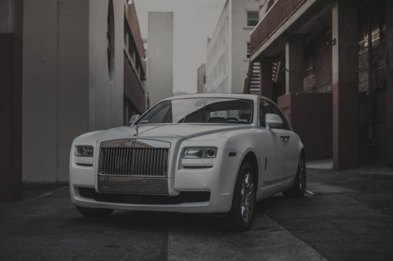
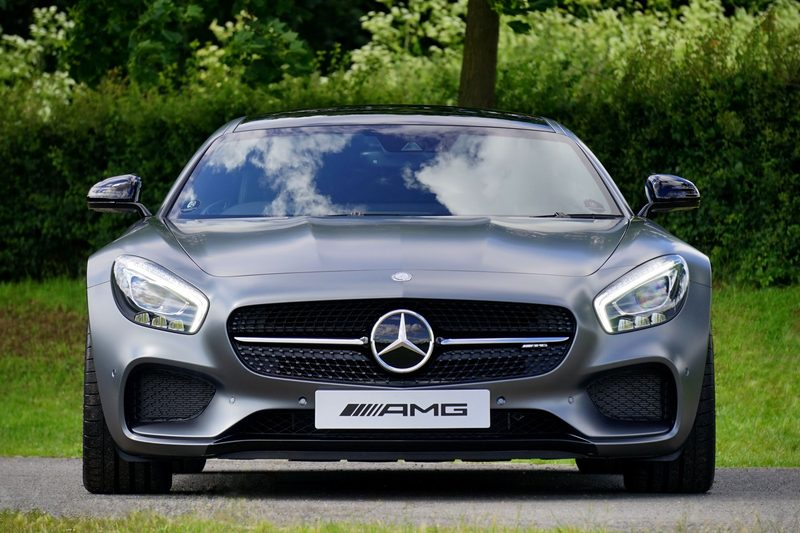
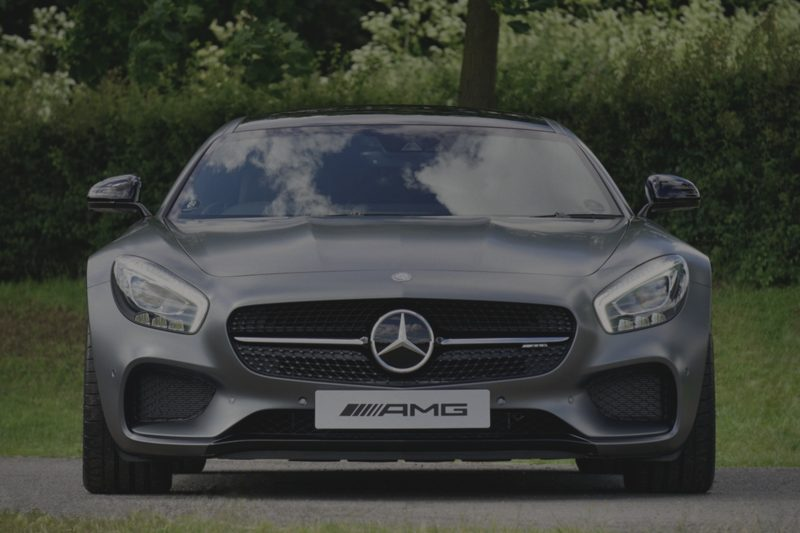

Results
The same car, twice.
These sliders are honest about what they are. Each pair uses one freely licensed photograph. The “before” frame is that same image, processed to look flatter and less considered — a suggestion of an unrestored finish, not a documentary record of a job.
01 · White Rolls-Royce
A courtyard portrait used as a finished frame. The left side of the slider is the same photograph with contrast, colour and reflections reduced, a warm haze added, and fine noise introduced. No claim is made about a real correction, a real client, or a measured result.


02 · Silver Mercedes-AMG GT
A head-on portrait against foliage. As with the Rolls-Royce, the left side is a processed version of the same file, not a second photograph taken before work.


How to read the sliders
Drag the divider, or move it with the arrow keys when the control is focused. They are a demonstration of a comparison interface a commissioned workshop site could use with real photography — they are not proof of paid work.